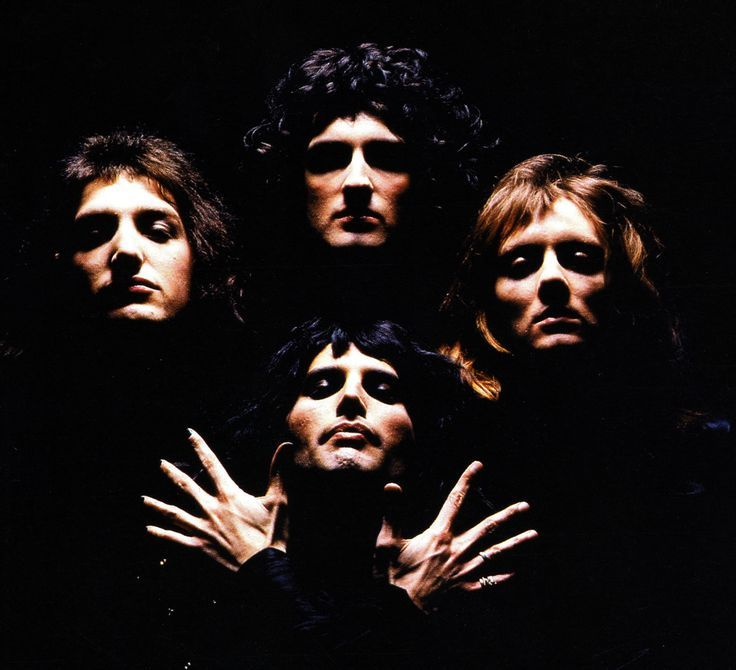

Queen are a British rock band formed in London in 1970.
Their classic line-up was
Freddie Mercury (lead vocals, piano), Brian May (guitar, vocals), Roger Taylor (drums, vocals) and John Deacon (bass).
Before forming Queen, May and Taylor had played together in the band Smile.
Mercury was a fan of Smile and encouraged them to experiment with more elaborate stage and recording techniques.
He joined in 1970 and suggested the name "Queen".
Deacon was recruited in February 1971, before the band released their eponymous debut album in 1973.
Their performance at the 1985 Live Aid concert is ranked among the greatest in rock history by various publications.
In August 1986, Mercury gave his last performance with Queen at Knebworth, England.
In 1991, he died of bronchopneumonia – a complication of AIDS – and Deacon retired in 1997.
Since 2004, May and Taylor have toured under the "Queen +" name with vocalists Paul Rodgers and Adam Lambert.
Freddie Mercury
Freddie Mercury (born 5 September 1946 – 24 November 1991) was a British singer, songwriter, record producer, and lead vocalist of the rock band Queen.
... Regarded as one of the greatest singers in the history of rock music,
he was known for his flamboyant stage persona and four-octave vocal range.
Mercury defied the conventions of a rock frontman, with his highly theatrical style influencing the artistic direction of Queen.
As a member of Queen, Mercury was posthumously inducted into the Rock and Roll Hall of Fame in 2001,
the Songwriters Hall of Fame in 2003, and the UK Music Hall of Fame in 2004.
In 1990, he and the other Queen members were awarded the Brit Award for Outstanding Contribution to British Music
Brian May
Brian Harold May CBE (born 19 July 1947) is an English musician, singer, songwriter, record producer, and astrophysicist.
He is the lead guitarist of the rock band Queen.
May was a co-founder of Queen with lead singer Freddie Mercury and drummer Roger Taylor,
having previously performed with Taylor in the band Smile,
which he had joined while he was at university. Within five years of
their formation in 1970 and the recruitment of bass player John Deacon completing the lineup,
Queen had become one of the biggest rock bands in the world with
the success of the album A Night at the Opera and its single "Bohemian Rhapsody".
Roger Taylor
Roger Meddows Taylor OBE (born 26 July 1949) is an English musician, singer, songwriter, and multi-instrumentalist,
best known as the drummer for the rock band Queen.
As a drummer, Taylor was recognized early in his career for his unique sound.
He was voted by radio listeners as the eighth-greatest drummer in classic
rock music history in a poll conducted by Planet Rock in 2005.
As a songwriter, Taylor contributed songs to Queen's albums from the beginning,
composing at least one track on every album, and often singing lead vocals on his own compositions.
He wrote or co-wrote three UK number ones ("These Are the Days of Our Lives",[4] "Innuendo" and "Under Pressure")
and contributed a further five major hits
("Radio Ga Ga", "A Kind of Magic", "Heaven for Everyone", "Breakthru", and "The Invisible Man").
John Deacon
John Richard Deacon (born 19 August 1951) is an English retired musician,
best known for being the bass guitarist for the rock band Queen.
He composed several songs for the group—including
Top 10 hits "You're My Best Friend", "Another One Bites the Dust", and
"I Want to Break Free"; co-wrote "Under Pressure", "Friends Will Be Friends"
and "One Vision"—and was involved in the band's financial management.

Queen
Freddie Mercury, Brian May, Roger Taylor, John Deacon